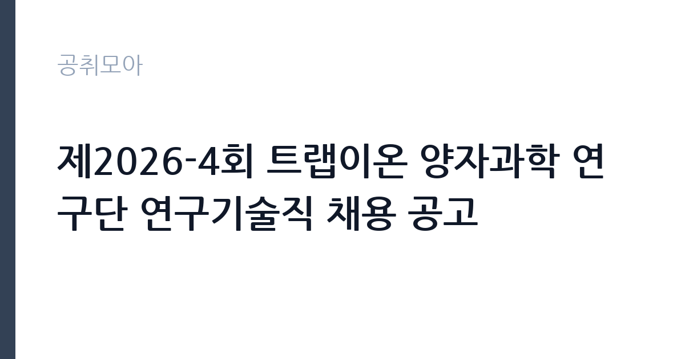

[공공기관] 제2026-4회 트랩이온 양자과학 연구단 연구기술직 채용 공고
기초과학연구원 · 대전 · 마감 2026-10-30 (D-17) · 출처 잡알리오

한눈에 보는 모집 조건
| 기관 | 기초과학연구원 |
|---|---|
| 공고명 | 제2026-4회 트랩이온 양자과학 연구단 연구기술직 채용 공고 |
| 고용형태 | 정규직 |
| 근무지 | 대전 |
| 게시일 | 2026-10-14 |
| 마감일 | 2026-10-30 (D-17) |
지원자격, 이렇게 읽으세요
- 공공기관 채용공시
- 세부 조건은 원문 공고문 확인
공통 응시자격은 국가공무원법상 임용 결격사유가 없고 연구원 규정에 저촉되지 않는 분이며, 비위면직자와 해외여행 결격사유 해당자는 제외됩니다. 남성은 병역필 또는 면제자여야 합니다. 모집 분야별 세부 지원자격은 공고문에 따로 제시되어 있으니, 학위·전공·경력 요건을 원문에서 반드시 대조하시기 바랍니다. 접수 마감일 기준으로 지원자격을 충족해야 하며, 전문연구요원 전직 가능 여부도 해당자는 미리 확인하시기 바랍니다.
이 공고의 포인트
첫 번째 포인트는 연구 주제의 희소성입니다. 트랩이온 방식은 양자컴퓨터 구현의 유력 후보 중 하나로, 미국·중국이 국책으로 투자하는 분야라 관련 경험의 시장 가치가 큽니다. 두 번째로 기초과학연구원은 과기정통부 산하 대표 출연연구기관이라 연구 인프라와 학술 네트워크가 탄탄합니다. 세 번째로 연구기술직은 연구장비 운용과 실험 지원을 전담하면서 박사급 연구진과 협업하므로, 석·박사 진학을 고민하는 분에게도 실무 자산이 됩니다.
전형은 어떻게 진행되나
전형은 서류전형과 면접전형 중심으로 진행되는 것이 일반적이며, 세부 일정과 제출 서류는 연구원 채용 홈페이지(ibs.re.kr)의 원문에서 확인하시기 바랍니다. 서류에서는 전공 적합성과 실험·장비 경험을 중심으로 심사하므로, 보유 기술(진공·레이저·전자회로·제어 등)을 구체적으로 정리하시기 바랍니다. 면접에서는 연구단 업무 이해도와 장비 운용 역량을 검증할 가능성이 높으니, 관련 실습 경험을 사례로 준비하시기 바랍니다.
원문에서 확인한 전형 방식
ㅇ 채용공고문에서 제시한 지원자격을 충족하는 자 - 모집분야별 지원자격 등 세부 내용은 공고문 참고 [응시자격 공통] ㅇ「국가공무원법」제33조 및 연구원 규정에 의한 임용 결격사유가 없는 자 ㅇ「부패방지 및 국민권익위원회의 설치와 운영에 관한 법률」제82조에 따른 비위면직자에 해당하지 않는 자 ㅇ 해외여행에 결격사유가 없는 자로 남자의 경우 병역필 또는 면제자 - 전문연구요원 지원 가능 공고인 경우, 전직자에 한해 지원 가능 ㅇ 응시서류접수 마감일 기준 지원자격 충족자
이런 분께 추천해요
- 물리·광학·전자공학 등 이공계 전공자로 양자실험 현장에 들어가고 싶은 구직자
- 진공·레이저·정밀측정 장비 운용 경험이 있는 연구지원 인력
- 대전 근무가 가능하고 출연연구기관 경력을 쌓고 싶은 취업준비생
지원 전 체크리스트
- 모집 분야별 세부 지원자격(학위·전공·경력)의 원문 대조
- 임용 결격사유와 병역 조건 충족 여부 확인
- 제출 서류(학위증명·경력증명 등)의 발급 소요기간 점검
- 근무지(대전 유성구 본원) 출퇴근·거주 계획 확인
모집 일정과 제출 타이밍
접수는 2026년 10월 14일 게시 이후 10월 30일에 마감됩니다. 이후 서류심사와 면접, 임용 순으로 이어지며, 확정 일정은 연구원 채용 홈페이지의 원문에서 확인하시기 바랍니다. 연구단 채용은 수시·핀셋 성격이 있어 일정이 앞당겨질 수 있으니, 서류는 마감일보다 여유 있게 제출하시는 것을 권합니다.
직무 이해하기: 공공기관
트랩이온 양자과학 연구단은 전자기장으로 이온을 가두고 레이저로 제어해 양자비트를 구현하는 연구를 수행합니다. 연구기술직은 초고진공 챔버와 레이저 광학계, 고주파 전원장치 등 실험 인프라의 설치·유지·보수를 맡습니다. 실험 데이터 취득을 지원하고 장비 로그와 안전관리를 기록하는 업무도 포함됩니다. 김기환 단장이 이끄는 연구단은 양자컴퓨팅의 핵심 원천기술 확보를 목표로 하고 있어, 기술직의 장비 전문성이 연구 성패에 직결되는 구조입니다.
자기소개서 작성 팁
지원서에서는 특정 장비(진공펌프·레이저·오실로스코프·DAQ 등)를 직접 운용한 경험을 장비명과 함께 구체적으로 쓰시기 바랍니다. 고장 진단과 수리, 교정 작업 사례가 있다면 절차와 결과를 수치로 제시하시는 것이 좋습니다. 양자과학이라는 주제에 대한 관심은 막연한 동경이 아니라, 관련 강의·세미나·독서 등 실제 학습 이력과 묶어서 서술하시기 바랍니다.
면접 준비 포인트
면접에서는 실험장비 트러블슈팅 경험과 안전관리 인식을 중점적으로 물을 가능성이 높습니다. 레이저 안전등급과 고전압·진공 설비의 위험 요소를 정리해 두시기 바랍니다. 연구단 논문이나 보도자료에서 다룬 최근 성과를 하나 정도 숙지하고 가시면 연구 이해도를 보여줄 수 있습니다. 교대·연장 실험 지원이 필요한 시기를 염두에 두고 근무 가능 범위를 솔직하게 밝히시기 바랍니다.
급여·근무조건 읽는 법
급여는 공고문에 회사 내규에 따른다고 안내되어 있어 확정 수치는 원문에서 확인하시기 바랍니다. 참고로 알리오 경영공시(2025년 확정값, kbizin 정리 기준)에 따르면 기초과학연구원 일반정규직의 1인당 평균 연봉은 8,863만원이며, 신입사원 초임은 4,297만원입니다. 평균보수 구성은 기본급 6,108만원(68.9%), 고정수당 657만원, 실적수당 137만원, 급여성 복리후생비 143만원, 성과상여금 1,818만원으로 안내되어 있습니다. 다만 연구기술직의 고용 형태와 직급에 따라 실제 보수는 달라질 수 있으니 원문과 근로계약 조건을 대조하시기 바랍니다.
자주 묻는 질문
- 연구기술직의 고용 형태는 어떻게 되나요?
연구기술직은 연구단의 실험·장비 지원을 전담하는 직군이며, 계약기간과 정규직 전환 가능 여부는 공고문마다 다릅니다. 본 공고의 고용 형태와 계약 조건은 원문에서 확인하시기 바랍니다. - 양자물리 전공자가 아니어도 지원할 수 있나요?
모집 분야별 세부 자격에 따라 다르며, 장비 운용·전자·기계 역량이 중시되는 자리도 있습니다. 본인의 전공과 경험을 분야 요건과 대조해 보시기 바랍니다. - 근무지는 어디인가요?
기초과학연구원 본원은 대전 유성구 엑스포로에 위치해 있으며, 연구단 실험실도 같은 캠퍼스에서 운영됩니다. 세부 근무 장소는 원문과 임용 안내에서 확인하시기 바랍니다.
함께 보면 좋은 공고
[공공기관] [직원채용] 무기계약직 연구기술직(방사선융복합연구팀) 공개 채용(재공고) — 마감 2026-10-27[공공기관] 단시간제(편의시설 점원) 채용공고 — 마감 2026-10-20[공공기관] [김해보훈요양원] 2026년 6차 요양보호직 채용공고 — 마감 2026-10-28출처: 잡알리오 공개정보를 바탕으로 공취모아가 정리한 안내글입니다. 모집 조건·일정은 변경될 수 있으니 지원 전 반드시 원문 공고문을 확인하세요. 본 글은 정보 제공용이며 합격을 보장하지 않습니다.